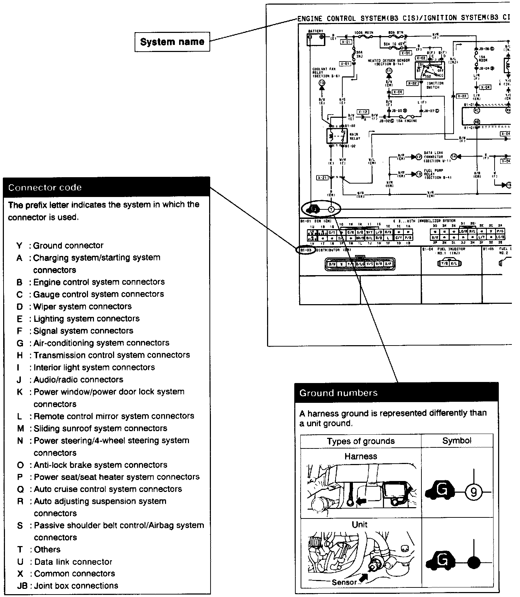
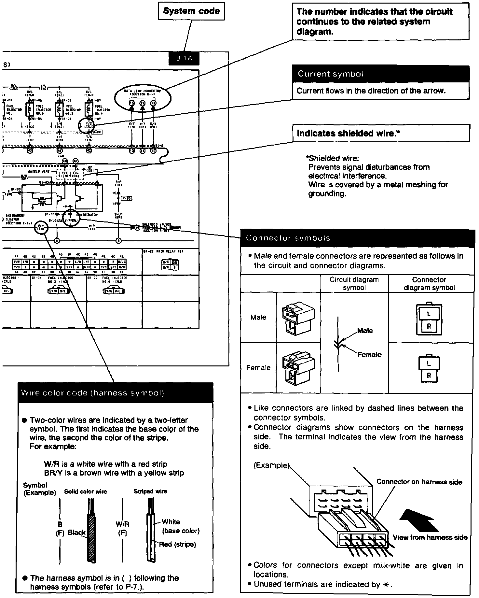

System Circuit Diagram/Connector Diagram


^ These diagrams show the circuits for each system, from the power supply to the ground. The power supply side is on the upper part, the ground side on the lower part of the image. The diagrams describe circuits with the ignition switch off.
Below is an explanation of the various points in the diagram.